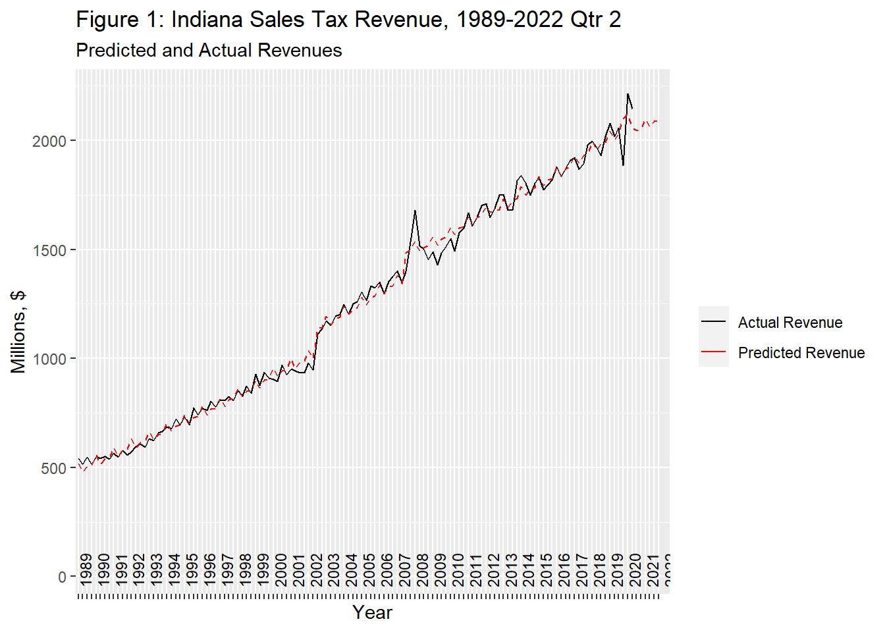

V609: Assignment 1
V609: Assignment 1
Andrew J. Poulter
MPA Student
Paul H. O’Neill School of Public & Environmental Affairs
andpoult@iu.edu
MPA Student
Paul H. O’Neill School of Public & Environmental Affairs
andpoult@iu.edu
February 19, 2021
Memo
To: Indiana State Budget Committee
From: Andrew J. Poulter
Date: February 19, 2021
Re: Revenue Forecast for Q3FY2021-Q4FY2022
Per your request, I have completed quarterly forecasts for Individual Income Tax Revenue (PIT) and Retail Sales Tax Revenue (RST) to aid you in your efforts to prepare the state budget. The forecasts cover the last two quarters of Fiscal Year 2021 and each quarter in Fiscal Year 2022. The forecasts can be found in Table 1 below. RST passed the $2 billion mark for the first time in FY2020 and will hover around that same range through FY2022. Below Table 1, Figure 1 displays the actual RST revenues for each quarter since 1989 with the black line. The red dotted line shows how well my model has predicted the actual revenues in those same years, as well as the predicted revenues through FY2022. Apart from the Great Recession (FY2007-2009) and COVID-19 (FY2020), the model has produced accurate predictions.
| Fiscal Year | Quarter | PIT (Millions) | RST (Millions) | Total (Millions) |
|---|---|---|---|---|
| 2021 | 3 | $1,349 | $2,045 | $3,394 |
| 2021 | 4 | $1,754 | $2,052 | $3,806 |
| Total | $3,103 | $4,097 | $7,200 | |
| 2022 | 1 | $1,427 | $2,101 | $3,527 |
| 2022 | 2 | $1,322 | $2,061 | $3,383 |
| 2022 | 3 | $1,373 | $2,089 | $3,461 |
| 2022 | 4 | $1,780 | $2,095 | $3,875 |
| Total | $5,901 | $8,346 | $14,246 |

PIT fluctuates heavily with each quarter, in recent years ranging from $1,322-$1,780 millions through FY2022 with quarter 4 producing the most PIT each year. The total PIT forecast for FY2022 is $5,901. Figure 2 highlights the strong quarterly fluctuations in actual revenues, with the black trend line showing actual revenues and the red dotted line showing the predicted revenues from my model. The model doesn’t quite capture the full quarterly variation starting in 2017.
Both forecasts were done using multivariate regression, meaning that the revenue forecasts were based on revenue growth over previous years and the values of other relevant data in those years. For PIT, the revenue forecast was influenced by time, the IN income tax rate, aggregate personal income for Hoosiers, the IN unemployment rate, and the difference between revenues in each quarter. The RST forecast included time, the sales tax rate, aggregate disposable IN for Hoosiers1, and the difference between sales in each quarter.2 You can find the equations for both models at the bottom of this report.
Because I included additional variables besides past revenue and time, I had to forecast each of those variables before using them to produce the revenue estimates. Using data from the U.S. Census Bureau and the Bureau of Economic Analysis, I produced simple trend forecasts for each independent variable (except for unemployment rate3), meaning that their forecasts are simply based on their past growth from year-to-year. Some of these additional variables only had values back to 1989, so the data for the revenue estimate only go back to 1989.
Equations and Notes
\[PIT = Time + Income Tax Rate + Personal Income + Unemployment Rate + Q2 Dummy + Q3 Dummy + Q4 Dummy\]
\[RST = Time + Sales Tax Rate + Q2 Dummy + Q3 Dummy + Q4 Dummy + IN Personal Disposable Income as Percentage of US\]
The quarter dummy variables were particularly important in order to capture the seasonality in the data. The revenues for both sales and income followed a quarterly pattern throughout each year and the dummy variables allowed the forecasts to react similarly.↩︎
Personal Disposable Income (PDI) data for IN was not available in quarters. Instead, I took the PDI for the U.S. and adjusted it according to the percentage of the U.S. population that Indiana made up each year in the data.↩︎
The estimates for unemployment rate used a lagged variable for unemployment to influence each subsequent prediction.↩︎